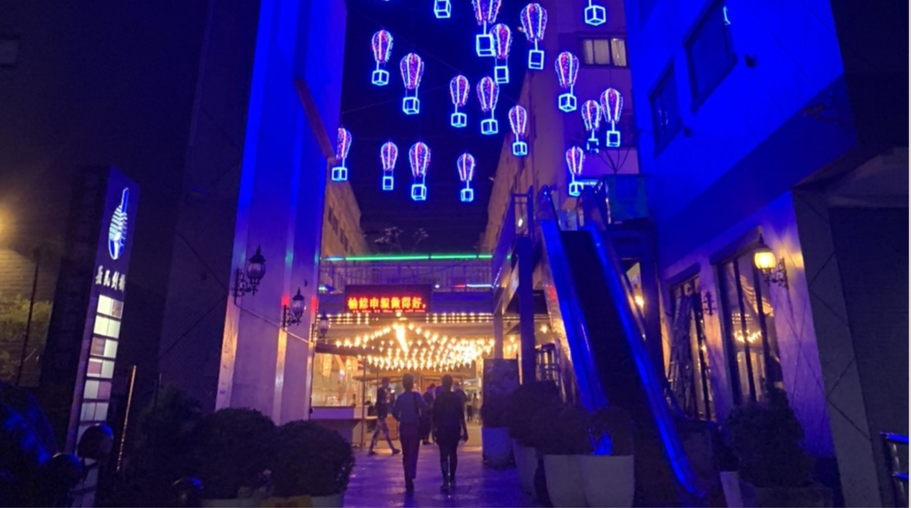

文創市集，腦海中浮現的是在特定區域有各種文創商品的攤位，就以台中來說，最知名的肯定 就是審計新村，一般的文創市集大多都是在白天，攤位內容大多都是以手工藝為主；但在夜晚 的市集在台彎卻是非常稀少，今天為大家介紹集燈光、裝飾、文創、夜市於一身的富地市場。
我們參訪富地市場的那天是市集快閃的最後一天晚上，映入眼簾的燈飾令人目眩神迷，夜市的 美食、文創的商品、迷人的燈光、炫輝的拍照景點，一個一個小攤位的設計融合了日本現代和 風，讓在逛市集的人彷彿置身於東京銀座。

由審計新村設計團隊，結合傳統夜市與文創市集，以特色美食為主的新形態市集，設計 主打日式木作攤位搭配傳統暖簾，暖色調的燈光裝置藝術讓人在夜晚流連忘返，最獨特 的地方是主打跨日夜型態，更結合人文、演唱、藝術，白天逛市集、晚上逛夜市的全新 體驗。
從傳統夜市的美食、到異國風情的沖繩料理，加上日式木作攤座、傳統軟簾，文青感的街廓意 象，及貨櫃藝廊。而夜間的暖色調裝置藝術與燈光使整個市集多了幾分情調。
而在整個市集裡最引人注目的還是位於市集中央的「無名木造藝術」，在一般人眼裡或 許這個木造藝術只是個打卡、拍照的地點，但以文創的角度來看，卻是凸顯整個市集的 重要角色，他給我的第一印象是很像是在兒時常玩的遊樂器材－立體格子鐵架，但他以 具有質感的木頭來取代冰冷鐵架，讓人有種懷念且溫暖的感覺。
雖然只是以簡單的幾個木造方塊所組成的藝術品，在燈光的照射下與整個市集融為一體也提升 了整體的質感。而他會以空心的方外來呈現或許是因為想讓這個木造藝術品不管在任何角度看 都可以在燈光的照射下提升整體的視覺感


在快閃活動的三個月後，得知這個獨特的市集即將關閉，聽到這個消息後難免都有點失 落，但富地市場將移至到台中知名的草悟道廣場接手營運，也期待設計團隊也能將新的 市集規劃的更加完美，讓我們重見最美的文創市集。